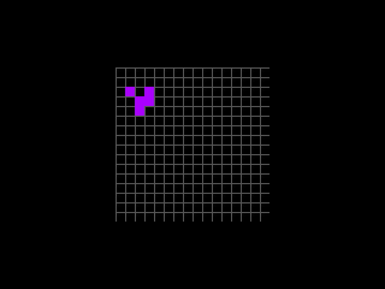

BruceLanLan / life-tapeout
EN
中文
beat 0
27,671
12,015
56
120
0
01 · rule
56 NAND · 392 B · 1024/1024 ✓
02 · grid
64 LATCH · 0 NAND · 4,160 B
03 · reuse
REF #3151 · +12 NAND
04 · ship
revert @ ERC1155InsufficientBalance
3,579
3,515
~9.05M
~3,776
3,584
~9.2M
120
3,648
~9.40M
76
4,352
~11.15M
tapeout.net
Tiny Tapeout · sky130
